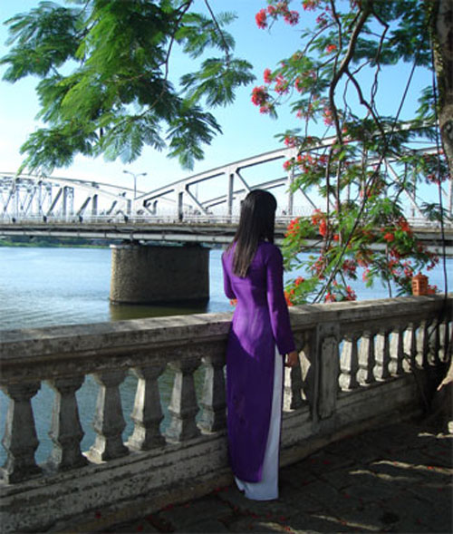

Khỏi cần phải nói, là con trai Huế chắc chẳng một ai không để lòng mình xúc động khi nghĩ về hai chữ Đồng Khánh. Đối với tôi ngôi trường Đồng Khánh chẳng khác gì một huyền thoại, một nơi chốn mà bọn con trai mới lớn, thường nghĩ về nó như nghĩ về một câu chuyện cổ tích.
Những tháng ngày rong chơi …, chờ lúc tan trường, tôi cùng thằng bạn cởi xe Honda đi mòn lốp trên đường Lê Lợi để chạy theo những tà áo trắng, nhưng chẳng được chút gì. Và quả thật, Đồng Khánh với tôi mãi mãi là nghìn trùng xa cách… nhưng cũng gần gủi bao nhiêu. Phải chăng ngôi trường ấy là biểu thượng cho vẻ đẹp của Huế cùng với khung cảnh thiên nhiên, đền đài lăng tẩm.

.Tuy nhiên Huế huyền thoại với tôi lại được gắn bó với một cây cầu. Nó quá quen thuộc. Nó là máu thịt, là tế bào luân lưu từng ngày, từng khoảnh khắc, là hơi thở của tuổi mới lớn, thời thanh xuân mơ mộng của tôi. Tôi muốn nói đến chiếc cầu Trường Tiền.
Tôi không truy nguyên nguồn gốc lịch sử, ai làm ra cây cầu nầy, làm lúc nào? Tôi chỉ cảm nhận một điều, cây cầu quá quen thuộc. Mỗi ngày tôi qua lại cây cầu bao nhiêu bận. Kỷ niệm của tôi với cây cầu luôn có hình bóng của những người thân yêu. Khi tôi lên 6, 7 tuổi, tôi nhớ rõ chiếc xe đạp giàn cha tôi chở tôi đi qua chiếc cầu xinh đẹp nầy. Mắt tôi quan sát người đi lại trên cầu. Cầu có đường dành riêng cho người đi xe đạp và đi bộ. Đó là hai con đường nhỏ hai bên cầu, được thiết kế, cho xe đạp riêng và người đi bộ riêng. Người đi bộ được rảo bước trên một lối đi nhỏ như là bờ lề của con đường, mà thành cầu là tay vịn cho họ. Tôi thích lan can thành cầu được làm bằng sắt mà lối rào chấn là những hình hoa văn chữ S rất đẹp. Nó nói lên lịch sử của cầu với đường nét cổ kính. Và thích nhất là đi một đoạn lại có lối mở rộng dành cho người đi bộ đứng nghỉ chân, thư giãn và người đi xe đạp có thể tránh nhau khi muốn vượt đường! Nét đẹp của cầu Trường Tiền là sự uốn lượn để có được không gian mở, nhờ vậy nó trở nên uyển chuyển mềm mại. Có người đã từng so sánh thân cầu trường Tiền như một người con gái với vòng eo tuyệt đẹp! Mỗi lần cha tôi chở qua cầu, tuổi con nít tôi ghi nhớ, thích nhìn những người đi bộ qua cầu và thỉnh thoảng thả mắt trông theo những chiếc xe hơi, xe gắn máy đang đi giữa cầu, như có một sự rộn ràng, nôn nóng.
Làm sao tôi quên được cây cầu.đã từng in dấu bước chân của tôi theo từng năm tháng. Tuổi thơ của tôi, thời đi học trung học và đại học. Ôi tôi nhớ những lần tôi đi học, chân tôi rảo qua từng con phố, Chi Lăng, Trần Hưng Đạo. Mắt tôi vẫn quan sát sinh hoạt thành phố, những tiệm bán đồ, mấy nhà sách: Tân Hoa, Văn Minh, Ái Hoa, Kiosque bán sách Bình Minh bên kia đường. Vẫn không quên nhìn những người ngồi uống cà phê dưới mái hiên của Lạc Sơn hay cà phê Phấn và đám đông tụ tập tại cổng vào chợ Đông Ba.
Khi qua cầu, thỉnh thoảng tôi tẩn mẩn nhìn xuống nước, dòng Hương Giang dịu dàng trầm mặc. Vẫn thích lắm những tà áo phất nhẹ của mấy nữ sinh khi có ngọn gió lùa. Ký ức tôi sao bồi hồi quá đổi, nhớ mãi câu hát của Trịnh Công Sơn: “Ôi! áo xưa lồng lộng. Đã trôi dạt trời chiều. Như từng cơn nước rộng. Xóa một ngày đìu hiu …"
Có phải nàng đang đi qua cầu, hai tay níu chặt vạt áo để khỏi bay vì gió đang lồng lộng và tà áo xưa hẳn đã phồng căng vì gió. Tôi đã bắt gặp kỷ niệm của mình trong đó, với người xưa, với cây cầu Trường Tiền xa xăm trong ký ức!
Vẫn nhớ thằng bạn tên Trần Duy Anh. Nó đèo tôi trên chiếc xe Yamaha đỏ mỗi khi tan trường để đi “nghễ” mấy nữ sinh Đồng Khánh, bình phẩm em nọ, em kia. Cứ qua lại cây cầu Trường Tiền không biết bao nhiêu bận để nhìn cho kỹ mấy nàng. Có lần chạy theo một em để rồi bị em cho de suýt rớt xuống đường cống!
Thời gian! chiến tranh...! cây cầu của tuổi thơ tôi, của Huế đã bị gãy đổ. Cây cầu thương tật …
Cầu Trường Tiền đã được trùng tu, sửa chữa lại nhưng vẫn bị biến dạng. Cây cầu không còn trở lại nét ngày xưa!
Ôi! cầu Trường Tiền của tôi, nơi đây đầy ắp kỷ niệm - những ngày xưa thơ mộng.
Cho dù thế nào tôi vẫn bồi hồi xúc động mỗi khi ra Huế, qua cầu. Tôi yêu cầu Trường Tiền. Tôi yêu Huế!